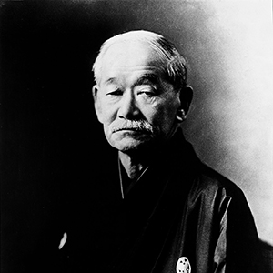

Judo is a system of unarmed combat, modern Japanese martial art, and Olympic sport since 1964.The term Judo translates to “the gentle way.” Judo was created in 1882 by Kanō Jigorō, distinguishing itself from its predecessors, jujutsu, due to an emphasis on "randori" or 'free sparring' instead of "kata" - pre-arranged forms - alongside its removal of striking and weapon training elements.
Judo's philosophy revolves around two primary principles: "Seiryoku-Zenyo" ('maximum efficient use of energy') and "Jita-Kyoei" ('mutual welfare and benefit'). The objective of competitive judo is to throw an opponent, immobilize them with a pin, or force an opponent to submit with a joint lock or a choke. Judo's international governing body is the International Judo Federation, and competitors compete in the international IJF professional circuit.
Each Judo technique has three distinct stages:
- Kuzushi - the opponent becoming off balanced
- Tsukuri - turning in and fitting into the throw
- Kake - execution and completion of the throw
A successfully executed throw results in an Ippon.